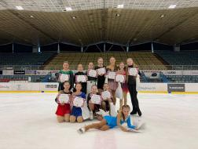
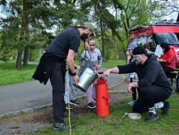

11. 06. 2026
Pozor, máme nefunkční emaily!
Naše emaily nemcova@nadaceokd.cz a balcikova@nadaceokd.cz jsou dočasně mimo provoz! Kontaktujte nás prosím zde: nadaceokd@gmail.com Děkujeme za pochopení. Zpět
Zjistit víceNadace OKD
Nadace OKD je významnou nadací nejen v Moravskoslezském kraji, ale také v rámci České republiky. Podporuje neziskové organizace, které pomáhají potřebným, zlepšují úroveň sociální péče, volnočasových aktivit, kulturního vyžití i životního…

Neziskovým organizacím
Spolkům a neziskovkám na sociální služby, kulturu, sport a životní prostředí v Moravskoslezském kraji.

Obcím zasaženým těžbou
Na veřejná prostranství, dětská hřiště a občanskou vybavenost v obcích ovlivněných důlní činností.

Zaměstnancům dárců
Lidem, kteří ve svém volném čase dělají něco prospěšného pro své okolí.
Granty
V číslech
3 649
podpořených projektů
456+
milionů korun rozděleno
18
let pomáháme regionu (od roku 2008)
Aktuality
11. 06. 2026
Naše emaily nemcova@nadaceokd.cz a balcikova@nadaceokd.cz jsou dočasně mimo provoz! Kontaktujte nás prosím zde: nadaceokd@gmail.com Děkujeme za pochopení. Zpět
Zjistit více
08. 06. 2026
Výroční zpráva za rok 2025 je na světě! Výroční zpráva obsahuje podrobný přehled aktivit nadace, přináší kompletní seznam podpořených organizací i finanční zprávu. Každý…
Zjistit více
01. 06. 2026
V rámci našich dlouhodobých aktivit se snažíme podporovat projekty, které mají skutečný smysl a pomáhají sportovcům dosahovat jejich cílů, a proto jsme se rozhodli v…
Zjistit více
04. 05. 2026
V současné době čelí rodiny téměř denně náročným situacím, ve kterých může nedostatečná komunikace či vzájemná netolerance vést až k jejich rozpadu. Nezisková organizace…
Zjistit více
20. 03. 2026
Horní Suchá se dočkala výrazného vylepšení míst pro trávení volného času. Hlavním cílem plánované revitalizace bylo zajistit dětem především bezpečné zázemí, které…
Zjistit více
04. 03. 2026
KARVINÁ (4. březen 2026) - Nadace OKD podpoří celkovou částkou přesahující 9 miliónů korun 135 neziskových projektů v našem regionu. Žádostí v programu Pro region bylo…
Zjistit více